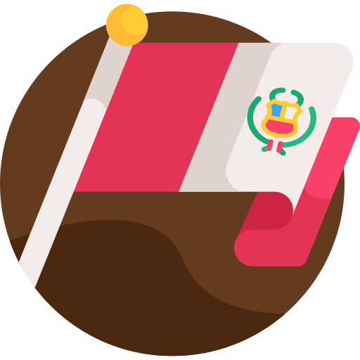

Peru
Áncash
Áncash ist von zwei Bergketten flankiert: der Schwarzen und der Weißen Kordillere. Die Berge, vor allem der Huascarán, vermitteln den Eindruck, den Himmel erreichen zu wollen. Daher finden Sie hier die besten Bergsteigerrouten des Kontinents.
Ica
In Ica gibt es eine Wüste und Tausende von Abenteuern. Beginnen wir mit einer Bootsfahrt zu den Ballestas-Inseln, einem Flug über die Nasca-Linien, einem Nachmittag an der Huacachina-Lagune, Sandboarding oder einem Luxuspicknick in der Wüste. Aber … was haben sie gemeinsam? Na, nichts! Alle Abenteuer in Ica sind überwältigend und einzigartig.

Madre de dios
In Madre de Dios dreht sich alles um das Gehen, Beobachten und Hören. Während Sie auf den Pfaden wandern, offenbart sich Ihnen unterwegs der gesamte Urwald. Wenn Sie genau hinschauen, werden Sie Bäume finden, die andere Bäume auf der Suche nach der Sonne umarmen. Wenn Sie aufmerksam zuhören, werden Sie Ara-Nester entdecken oder Affenherden, die sich schnell durch die Baumkronen fortbewegen.